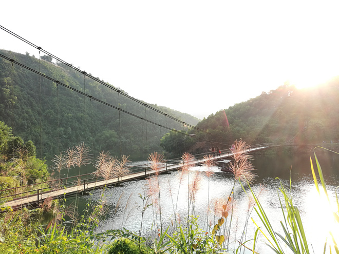
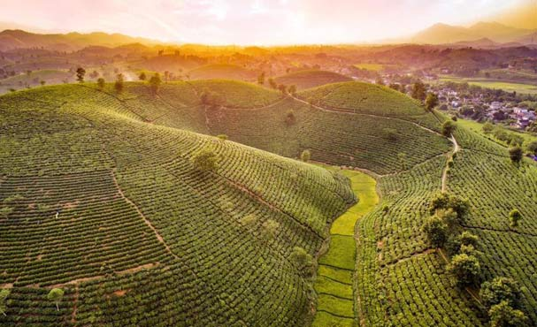
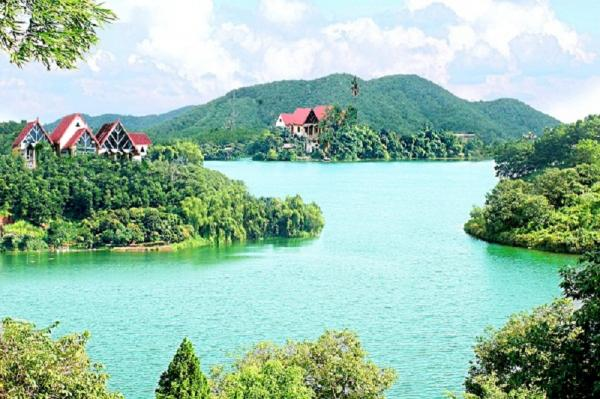

Núi rừng hoang sơ yên bình giống như trong những bộ phim kiếm hiệp là điều bạn sẽ cảm nhận được khi đến những địa danh này của Phú Thọ.
Địa chỉ: hồ Ly, nằm ở xã Thượng Long, huyện Yên Lập.
Từ Hà Nội, xuôi theo Quốc lộ 32 hướng qua cầu Trung Hà khoảng hơn 100km, đến thị trấn Yên Lập thì hỏi đường vào xã Thượng Long. Hồ nằm ở gần cuối xã, đường vào nhỏ, không có biển chỉ dẫn nên khá khó đi.
Điểm nhấn làm nên sự ấn tượng của hồ Ly đó chính là cây cầu treo bằng sắt. Cầu bắc qua lòng hồ, nối 2 quả núi với nhau. Đứng trên cầu, các bạn có thể nhìn ngắm khung cảnh hùng vĩ của núi rừng, vẻ đẹp hiền hòa của mặt hồ phẳng lặng.
Địa chỉ: Long Cốc, Tân Sơn, Phú Thọ
Những đồi chè xanh mướt, trùng trùng điệp điệp, cung đường quanh co nối liền bên sườn đồi tạo nên vẻ đẹp huyền bí khiến bất cứ ai có dịp ghé chơi cũng ngỡ ngàng.
Đến đây, bạn sẽ được đắm mình trong không gian yên tĩnh, không khí mát lành cùng hương gió vấn vương vị thơm thơm, chát chát đặc trưng của chè Long Cốc.
Địa chỉ: xã ấm Thượng, xã Y Sơn và xã Phụ Khánh, huyện Hạ Hoà tỉnh Phú Thọ, cách thành phố Việt Trì 80km
Nằm giữa một vùng đồi thấp, đầm Ao Châu có hình dáng khá đặc biệt. Nhìn trên bản đồ, đầm giống như đầu một con Trâu có hai sừng choãi ra hai phía sông Thao và sông Lô.
Trải qua nhiều năm nơi đây vẫn giữ được vẻ đẹp hoang sơ, bốn mùa nước chẳng bao giờ cạn, luôn giữ được màu xanh trong. Trong hồ có rất nhiều đảo lớn nhỏ và loại cây ăn quả như vải, nhãn, mít, bưởi... đã khiến Ao Châu như một Hạ Long thu nhỏ.